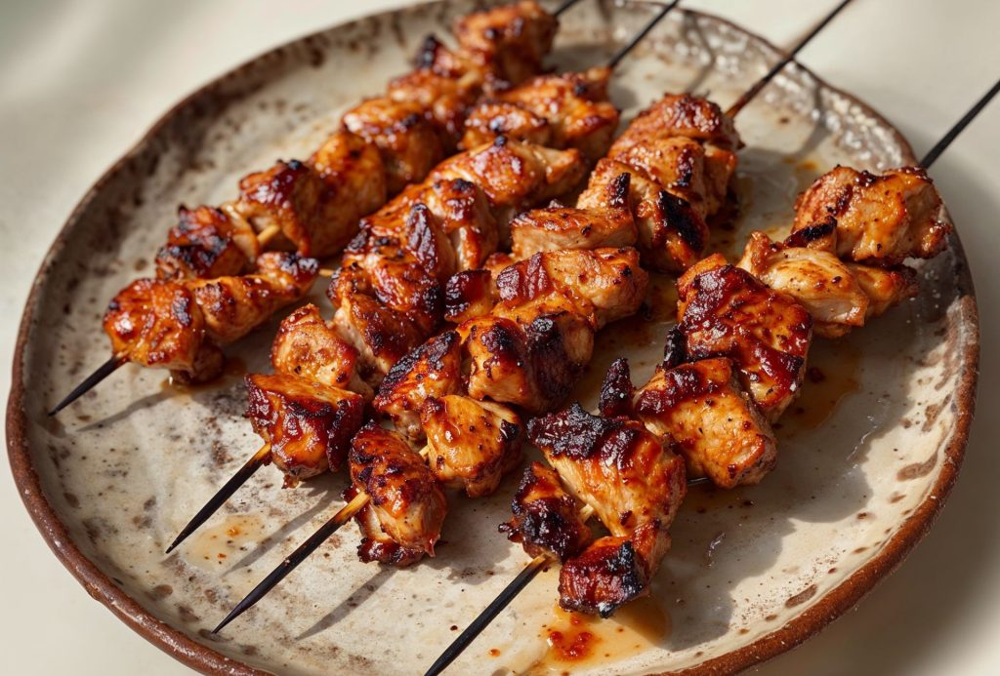

Nepali Chicken Skewer

The Nepali Chicken Sekuwa is a mouthwatering street food from Nepal. It is
made by marinating succulent pieces of fresh chicken in a blend of
aromatic spices left to marinate overnight then grilled to perfection over
charcoal for wood fire. The combination of the marinade and the smoky
flavour from the grill creates an unforgettable taste experience
Ingredients
-
Mix together the flour and 1 1/2 cups room temperature water in a bowl.
Knead the dough well until it is medium-firm and flexible. Cover and let
rest for 1 hour.
-
To get the best results for the Nepali Chicken Sekuwa Recipe, it is
recommended to marinate the chicken overnight, so it is a good idea to
plan ahead when making this dish.
-
Using the yogurt to marinate will tenderise the chicken and also stop it
from drying out when you cook the chicken.
-
If you don't have a grill then you can always cook the skewers in an
oven 180 degrees celcius for 35 minutes. To give it a grilled/ open fire
cooking flavour quickly put individual chicken pieces over stove open
flame.